The first home that we could call our own, we loved this townhouse where we stayed from January 2001 until March 2005. Meenakshi took special pride in decorating this home — her first real canvas. Our son Pronoy was born here in April 2002. Just a few months earlier, we had witnessed on television the great tragedy that befell this nation on September 11, 2001. As much as we loved this house, it was a little too cramped for a family of four, which is why we had to move again.
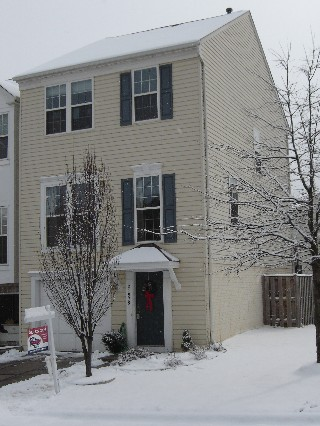
Outside, on a snowy morning.
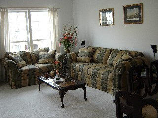
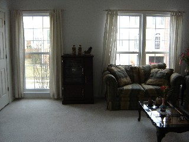
Two views of the living room.
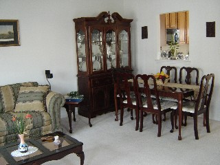
The formal dining arrangement.
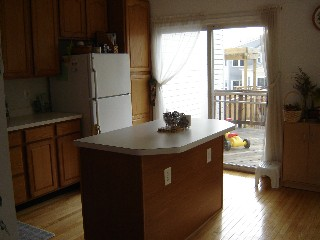
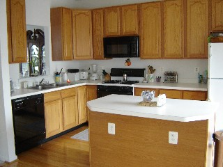
The large, sunlit kitchen — the most popular place in the house.
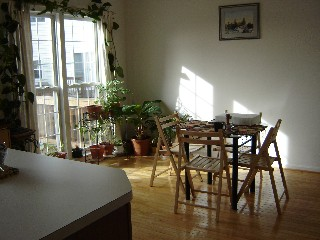
The kitchen table arrangement, where we ate most of our meals.
The bathroom on the main level.
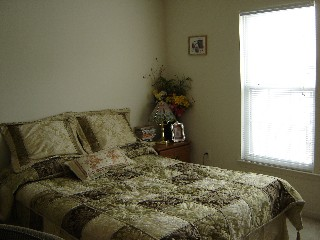
The master bedroom.
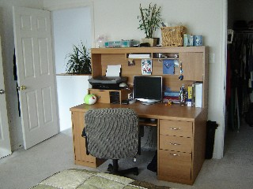
Meenakshi's study.
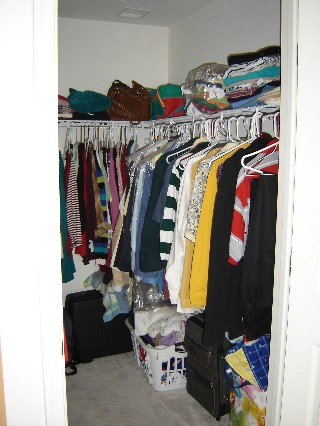
Our walk-in closet.
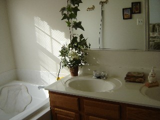
The master bathroom.
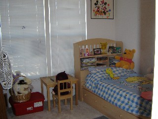
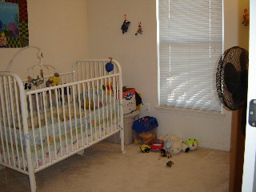
Arpita's room (left) and Pronoy's room (right).
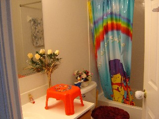
The kids' bathroom.
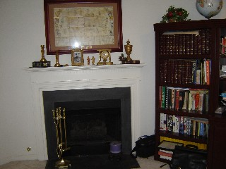
My study.